StartupFest Ortidagi Insonlar

O‘zbekiston yoshlari orasida yosh iste’dodlarni faollashtirishga bag‘ishlangan tashkilotchilar, muhandislar va ekotizim quruvchilar jamoasi.
StartupFest Ortidagi Insonlar
Munisa Murodova
CEO va asoschi
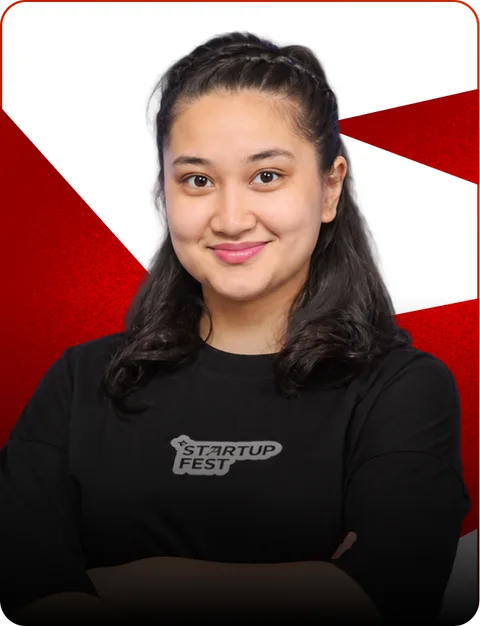
Ziyodullo Shuxratbekov
Hammuassis
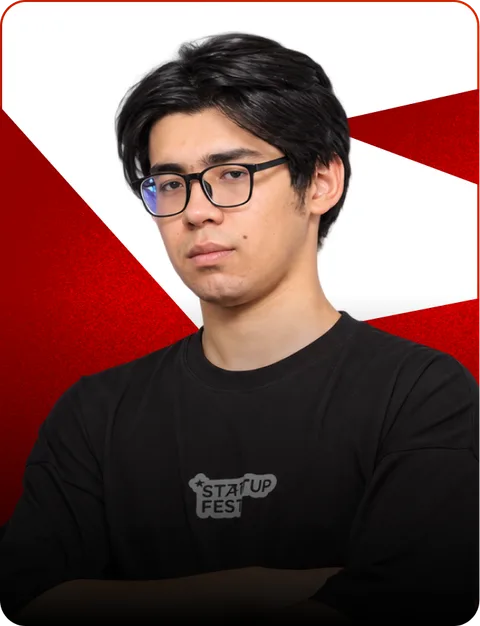
Sanobar Ibroximova
Ekotizim va homiylik bo‘yicha menejer
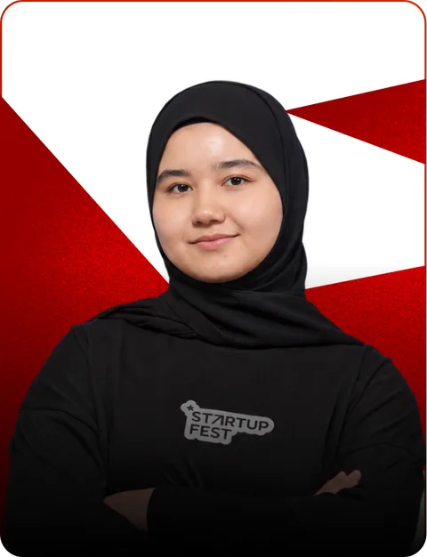
Valijon Narimov
Hamjamiyat va o‘sish bo‘yicha menejer
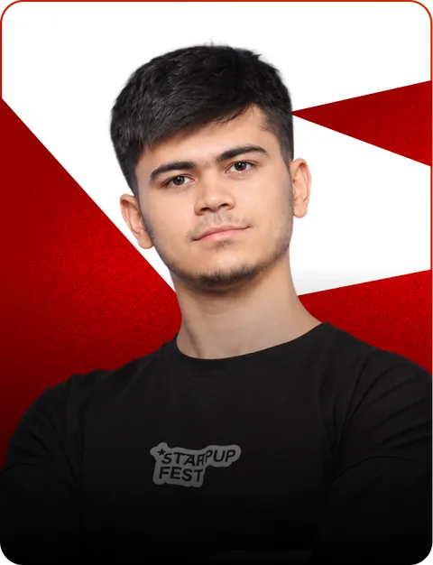
Muhiddin Zaynobiddinov
Dizayn va UI bo‘yicha menejer
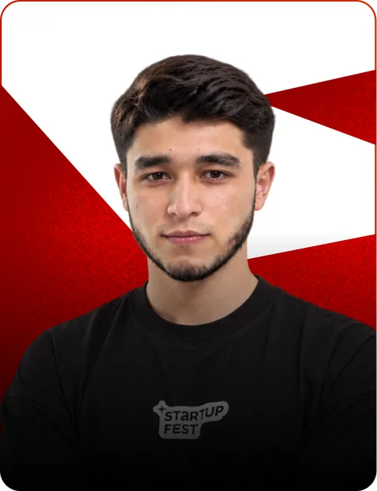
Sevinch Nematova
Media menejer
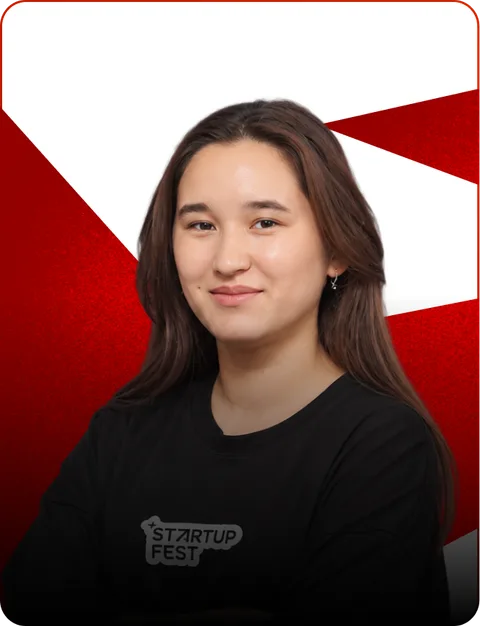
Firdavs Dilmurodov
Videograf
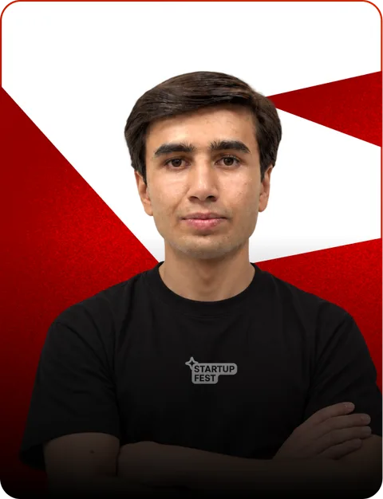
Mentorlar va soha ekspertlari
Hakaton va bootcamplar davomida yakkama-yakka texnik fikr va yo‘naltirish beruvchi yetakchi soha mutaxassislari.
Abdulaziz Yakubov
Yoshlar Ventures CEO · UzCombinator kengashi a’zosi
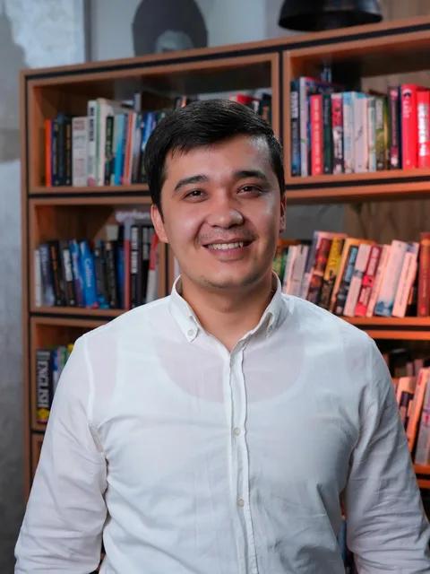
Shoxruxbek G‘ulomov
Yoshlar Ventures rais o‘rinbosari va loyiha menejeri
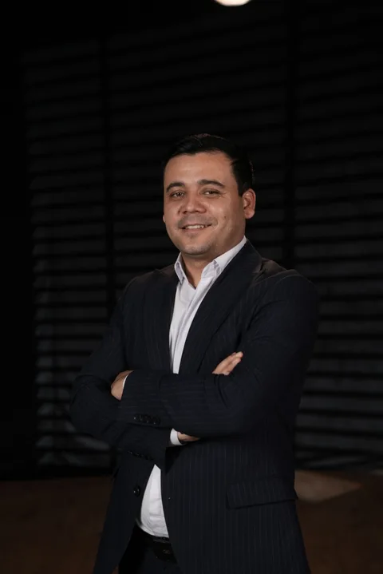
Sardorbek Shokirov
Yoshlar Ventures investitsiya menejeri · UzCombinator o‘sish menejeri
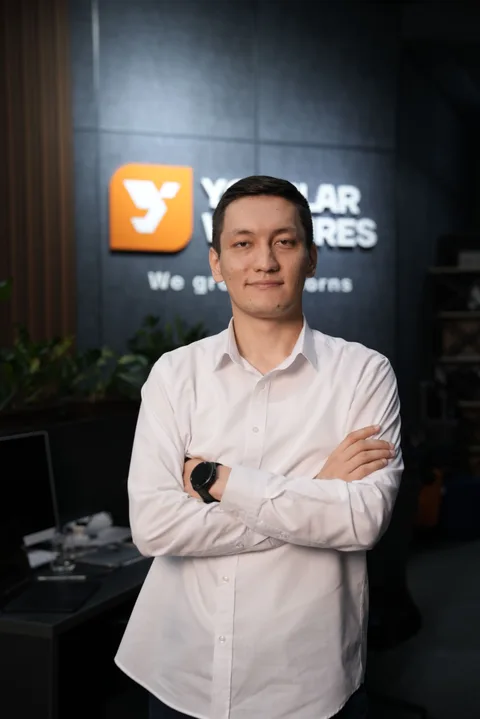
Azizbek Kurbanov
AK Capital Consultancy Firm CEO · Yoshlar Ventures strategik maslahatchisi
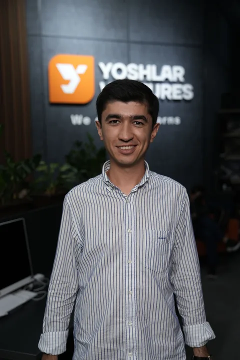